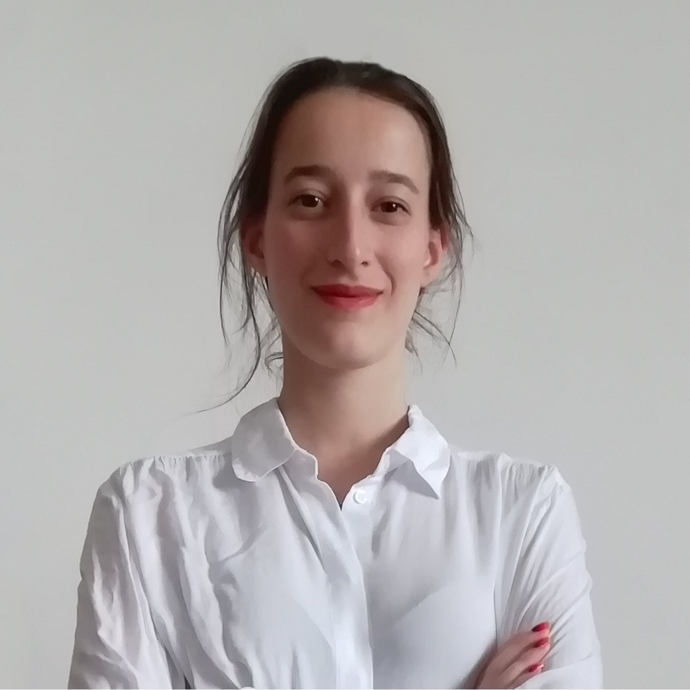

Lucia Becatti
Ph.D. student in Computer Science
Dipartimento di Informatica "Giovanni Degli Antoni", Università degli Studi di Milano, Italy
Papers and Publications
-
On color differences in context
Lucia Becatti, Beatrice Sarti, Gabriele Simone, and Alessandro Rizzi (2026)
Journal of the Optical Society of America A, Vol. 43, Issue 1, pp. 59-66
-
Subjectivity in color film restoration: A multi-lab comparison
Lucia Becatti, Beatrice Sarti, Enea Ahmedhodzic, and Alessandro Rizzi (2026)
Digital Applications in Archaeology and Cultural Heritage, Vol. 41
-
On the need for spatial component in describing colour vision deficiency
Beatrice Sarti, Daniele Aurelio, Carlo Alberto Iocco, Lucia Becatti, Andrea Mazzoni, and Alessandro Rizzi (2026)
ColourTurn, Vol. 2, Issue 2
-
Caratteristiche colorimetriche di alcune palette per daltonici disponibili online
Beatrice Sarti, Daniele Aurelio, Carlo Alberto Iocco, Lucia Becatti, and Alessandro Rizzi
Oral presentation at the XX Conferenza del Colore, Napoli, 2025 -
The role of subjectivity in color film restoration
Lucia Becatti, Enea Ahmedhodzic, Beatrice Sarti, and Alessandro Rizzi
Oral presentation at the conference Colour Photography and Film: Sharing knowledge of analysis, preservation, and Migration of Analogue and Digital Materials, Amsterdam, 2024
Education
2026 – today
Ph.D. in Computer Science
Università degli Studi di Milano, Italy
2022 – 2024
Master's Degree in Cultural Heritage Conservation Science
Università degli Studi di Milano, Italy
2018 – 2021
Bachelor's Degree in Science and Technology for Studying and Preserving the Cultural Heritage and Information Storage Media
Università degli Studi di Milano, Italy
Contact Me
Mail: lucia.becatti@unimi.it
Phone: +39 392 126 34 55